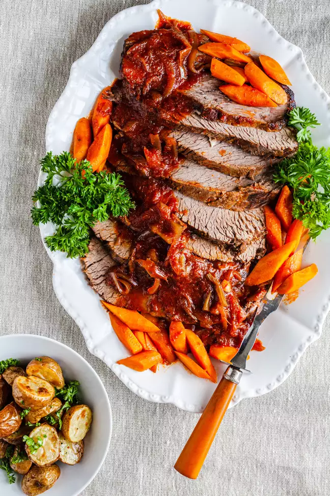

Jewish Brisket

Description
A casserole of jumbo shells filled with ricotta, Parmesan, and mozzarella baked in tomato sauce to oozy,
melty perfection will have everyone clamoring for a seat at the table. It’s supreme comfort food and it’s easy enough to put together for a satisfying weeknight meal.
Ingredients
For the sauce
- 2 tablespoons olive oil
- 3 garlic cloves, thinly sliced
- 1 (28-ounce) can whole, peeled tomatoes, crushed in a bowl
- 1/2 teaspoon salt
- 1-2 pinches sugar (optional)
For the filling and assembly
- 2 cups (16 ounces) fresh whole or skim-milk ricotta
- 2 cups (8 ounces) grated mozzarella, divided
- 1 cup (4 ounces) finely grated Parmesan, divided
- 1 large egg
- Finely grated zest of 1 lemon (about 1 tablespoon)
- 1/4 cup chopped parsley
- 1/4 teaspoon salt, plus more for the pasta water
- 1/8 teaspoon freshly ground black pepper
- 8 ounces jumbo shells (save the remaining shells for another use)
- Torn basil leaves (about 2 sprigs) or 2 tablespoons chopped parsley (for garnish)
Steps
Starting with a cold pan, cook the garlic in olive oil:
Simmer the sauce:
Preheat the oven:
Make the filling:
Cook the pasta:
Thin the tomato sauce, if needed:
Fill and assemble the shells:
Bake the shells:
Storage and reheating: